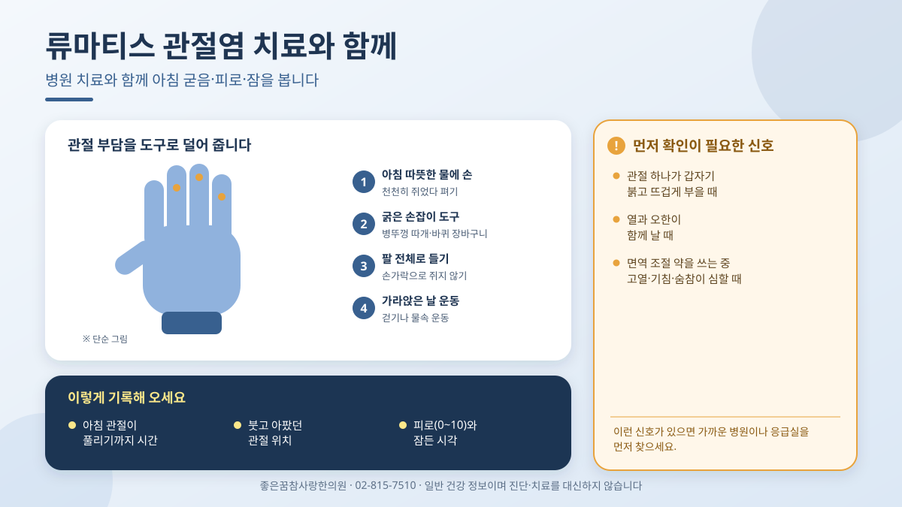

이종호 한의사 감수좋은꿈참사랑한의원 대표원장 (한의사 면허번호 19769)발행 2026-11-26 · 수정 2026-11-26
이 글의 차례
아침에 일어나 단추를 채우려는데 손가락이 말을 듣지 않습니다. 주먹을 쥐었다 폈다 한참을 해야 겨우 풀리고, 물병 뚜껑을 여는 일도 버겁습니다. 손가락 마디가 양쪽 똑같이 통통하게 부어 있고, 이유 없이 몸이 무겁고 피곤합니다. 류마티스내과에서 진단을 받고 약을 먹기 시작했지만, 약 말고도 내가 할 수 있는 일이 없을까 싶습니다.
류마티스 관절염은 우리 몸의 면역이 관절을 감싸는 얇은 막(활막)을 공격해 염증이 생기는 병입니다. 손가락 마디, 손목, 발가락처럼 작은 관절이 양쪽으로 함께 붓고 아프며, 아침에 오래 굳는 것이 특징입니다. 염증이 오래 이어지면 관절 주변 뼈와 연골이 상할 수 있어, 일찍 진단받고 꾸준히 치료하는 것이 무엇보다 중요합니다.
치료의 중심은 류마티스내과입니다. 염증을 조절하는 약은 관절이 상하는 것을 막기 위해 쓰는 것이라, 아프지 않은 날에도 꾸준히 이어 가야 합니다. 진료실에서 저는 이 점을 가장 먼저 말씀드립니다. 한의원 진료는 그 치료를 대신하는 것이 아니라, 곁에서 함께 가는 것입니다.
그렇다면 함께 가며 무엇을 볼 수 있을까요. 약으로 염증을 조절하고 있어도 아침의 굳음, 몸 전체의 피로, 잠과 식사의 흔들림, 손을 쓰는 일의 어려움은 생활 속에 남아 있는 경우가 많습니다. 저는 이 부분을 하나씩 나눠서 살핍니다.
왜 관절에 염증이 생길까요
면역은 원래 바깥에서 들어온 세균이나 바이러스를 막는 일을 합니다. 그런데 어떤 이유로 이 면역이 내 몸의 관절막을 적으로 잘못 알고 공격하면, 관절막이 두꺼워지고 붓고 열이 나며 아프게 됩니다. 이런 병을 자가면역질환이라고 부릅니다.
정확한 원인은 아직 다 밝혀지지 않았지만, 타고난 체질적 요인과 흡연 같은 환경 요인이 함께 작용한다고 알려져 있습니다. 30대에서 50대 여성에게 많이 생기지만, 남성이나 더 젊은 나이, 더 나이 든 분에게도 생길 수 있습니다.
류마티스 관절염은 관절만의 병이 아니라 몸 전체의 병이기도 합니다. 염증이 있으면 쉽게 피곤하고, 미열이 나거나, 입맛이 떨어지고 체중이 빠지기도 합니다. 눈과 입이 마르는 증상, 빈혈, 폐나 혈관 쪽 문제가 함께 오는 경우도 있어 류마티스내과에서 정기적으로 확인합니다.
한의학에서는 관절이 붓고 아프고 굳는 병을 비증(痺證)의 범주에서 살펴 왔고, 오래 이어지면 몸 전체의 기운과 혈이 함께 지친다고 보았습니다. 그래서 저는 아픈 관절과 함께 몸 전체의 피로와 회복력, 차고 더운 정도, 잠과 소화를 함께 봅니다.
퇴행성 관절염과는 어떻게 다를까요
진료실에서 "손가락이 아픈데 류마티스인가요, 나이 들어 그런 건가요?"라는 질문을 자주 받습니다. 두 병은 모양이 꽤 다릅니다.
- 류마티스 관절염은 아침에 한 시간 가까이, 또는 그보다 오래 굳어 있는 경우가 많고, 퇴행성은 몇 분 안에 풀리는 경우가 많습니다
- 류마티스는 손가락 가운데 마디와 손등 쪽 마디, 손목이 양쪽으로 함께 붓는 경우가 많고, 퇴행성은 손가락 끝마디가 단단하게 튀어나오는 경우가 많습니다
- 류마티스는 쉬어도 붓고 아프며 피로와 미열이 함께 오기도 하고, 퇴행성은 많이 쓴 뒤에 더 아프고 쉬면 편해지는 편입니다
물론 이 구분만으로 진단이 정해지지는 않습니다. 손가락 관절이 여러 곳 양쪽으로 붓고 아침 굳음이 길다면 류마티스내과에서 혈액 검사와 사진으로 확인해 보시길 권합니다. 일찍 확인할수록 관절을 지키는 치료를 시작하기가 수월합니다.
비슷해 보이지만 다르게 살펴야 하는 경우
엄지발가락이나 발목 한 곳이 갑자기 붉고 뜨겁게 부어오른다면 통풍을 먼저 생각합니다. 여러 관절이 양쪽으로 함께 붓는 류마티스와는 모양이 다릅니다.
피부에 은백색 각질이 쌓이는 건선이 있으면서 손가락 하나가 소시지처럼 통째로 붓는다면 건선성 관절염을, 젊은 나이에 허리와 엉덩이가 아침마다 굳는다면 강직성 척추염을 함께 생각합니다.
손이 저리고 새벽에 깨며 엄지와 검지, 중지가 주로 저리다면 손목터널증후군일 수 있습니다. 류마티스 관절염으로 손목이 부으면 손목터널증후군이 함께 오기도 해서, 저림과 붓기를 나눠서 봅니다.
피로와 잠, 마음도 함께 봅니다
류마티스 관절염을 가진 분들이 관절 통증만큼 힘들다고 말씀하시는 것이 피로입니다. 충분히 잤는데도 몸이 무겁고, 오후가 되면 기운이 쭉 빠집니다. 염증 자체가 피로를 만들기도 하고, 통증으로 깊이 잠들지 못하는 것도 피로를 키웁니다.
잠은 통증과 서로 맞물려 있습니다. 밤에 관절이 쑤셔 자주 깨면 다음 날 통증이 더 크게 느껴지고, 그러면 또 밤잠이 얕아집니다. 그래서 저는 관절과 함께 잠드는 시각, 깨는 횟수, 낮잠을 꼭 여쭙습니다.
오래 이어지는 병은 마음도 지치게 합니다. 손이 예전처럼 움직이지 않아 좋아하던 일을 내려놓아야 할 때, 주변에 아프다는 말을 반복하기 미안할 때 마음이 무거워집니다. 그 이야기를 꺼내 놓으셔도 괜찮습니다. 진료실은 관절만 보는 곳이 아니라 그 관절로 하루를 사는 사람을 함께 보는 곳이라고 생각합니다.
손을 쓰는 하루를 다시 짜 봅니다
류마티스 관절염은 손과 손목에 잘 생기다 보니, 하루의 거의 모든 일이 관절에 부담이 됩니다. 걸레를 비틀어 짜기, 무거운 냄비 들기, 병뚜껑 돌리기, 휴대폰을 오래 쥐고 있기처럼 손가락 마디를 꽉 쥐거나 비트는 동작이 특히 그렇습니다.
이런 일을 모두 그만둘 수는 없으니, 방법을 바꾸는 쪽으로 생각해 봅니다. 걸레는 짜지 않고 밀대를 쓰고, 냄비는 두 손으로 손잡이를 감싸 들거나 작은 것으로 나누고, 휴대폰은 거치대에 세워 두는 식입니다. 작은 변화가 하루에 수십 번 반복되면 관절이 받는 부담이 꽤 달라집니다.
일을 몰아서 하지 않는 것도 중요합니다. 김장이나 대청소처럼 손을 오래 쓰는 일은 며칠에 나눠서 하고, 한 시간에 한 번은 손을 쉬게 해 주세요. 아침에 굳어 있는 시간에는 손을 많이 쓰는 일을 피하고, 몸이 풀린 오후로 옮기는 것도 방법입니다.
발도 함께 봅니다. 발가락 관절이 붓는 분은 앞코가 좁은 신발을 신으면 통증이 커지기 쉽습니다. 앞이 넉넉하고 바닥이 푹신한 신발을 고르고, 굳은살이 생기는 자리가 있다면 진료 때 함께 보여 주세요.
먼저 이렇게 여쭙니다
결과지와 약 봉투를 함께 펼쳐 놓고, 저는 대략 이런 순서로 여쭙니다.
- 진단은 언제 받으셨고, 지금 드시는 약과 맞으시는 주사는 무엇인가요?
- 최근 혈액 검사에서 염증 수치는 어떻다고 들으셨나요?
- 아침에 일어나 손이 풀리기까지 얼마나 걸리나요?
- 요즘 붓고 아픈 관절은 어디인가요? 양쪽인가요?
- 피로, 미열, 입맛, 체중, 잠은 어떠신가요?
- 손을 쓰는 일 가운데 특히 어려워진 일은 무엇인가요?
드시는 약이 많아 헷갈리신다면 약 봉투를 그대로 가져오셔도 됩니다. 함께 정리해 드립니다. 진통제나 영양제, 건강식품처럼 따로 챙겨 드시는 것도 빠짐없이 알려 주세요.
일상에서 먼저 해 볼 수 있는 것
류마티스 관절염과 함께하는 일상은 '관절을 아끼면서, 굳지 않게 움직이기'로 정리할 수 있습니다. 치료는 류마티스내과 안내를 따르시고, 그 위에서 아래 습관을 들여 보세요.
- 아침에 따뜻한 물에 손을 담그거나 따뜻한 샤워 뒤 손가락을 천천히 쥐었다 펴기
- 병뚜껑 따개, 손잡이가 굵은 수저와 칼, 바퀴 달린 장바구니처럼 관절 부담을 덜어 주는 도구 쓰기
- 무거운 것은 손가락으로 쥐지 말고 팔 전체나 몸에 붙여 들기
- 염증이 심한 날은 쉬고, 가라앉은 날은 걷기나 물속 운동처럼 관절에 부담이 적은 운동 이어 가기
- 담배는 병의 경과와 약의 반응에 좋지 않다고 알려져 있으니 끊기
- 생선, 채소, 콩, 올리브유 같은 재료를 고르게 먹고, 끼니를 거르지 않기
붓고 뜨거운 관절에는 수건에 싼 차가운 찜질이, 굳고 뻣뻣한 관절에는 따뜻한 찜질이 편하다는 분이 많습니다. 내 관절이 그날 어느 쪽에 편한지 적어 보세요. 찜질은 한 번에 15분 남짓, 피부가 상하지 않도록 수건을 꼭 대고 하시면 됩니다.
감기나 다른 감염에도 신경 써 주세요. 일부 류마티스 약은 면역을 조절하기 때문에 감염에 조금 더 취약해질 수 있습니다. 손을 자주 씻고, 예방접종은 류마티스내과와 상의해 챙기시길 권합니다.
한의원에서 함께 살필 수 있는 경우
- 류마티스내과 치료로 염증은 조절되고 있지만 아침의 굳음과 관절 주변 뻐근함이 남아 있는 경우
- 관절 통증을 감싸느라 어깨, 목, 허리, 손목 주변 근육이 굳고 무거워진 경우
- 피로와 잠, 입맛, 소화가 함께 흔들려 하루를 버티기 힘든 경우
- 차고 습한 날이나 바쁜 주간 뒤에 몸 전체가 무겁고 관절이 더 뻣뻣해지는 경우
좋은꿈참사랑한의원에 처음 오시면 먼저 아래 '먼저 확인이 필요한' 신호가 없는지부터 봅니다. 그다음 맥을 짚고, 관절의 붓기와 열감, 손의 쥐는 힘과 움직임, 관절 주변 근육의 긴장을 확인합니다. 필요하면 초음파로 관절 주변을 함께 살펴봅니다.
그 뒤 진찰한 내용과 류마티스내과 치료 계획을 바탕으로 침, 온열 장비를 이용한 관리, 한약 상담 가운데 지금 상태에 맞는 것을 정합니다. 염증이 심하게 올라와 있는 관절에는 직접 자극을 피하고, 주변 근육과 몸 전체를 살피는 쪽으로 범위를 정합니다.
한약을 상의할 때는 드시는 약과 주사, 간 수치와 신장 기능 같은 검사 결과를 모두 확인하고 신중하게 정합니다. 류마티스내과 진료와 약은 그대로 이어 가시는 것을 기본으로 합니다.
다시 오시면 지난번 정한 것 하나가 실제로 어땠는지부터 이어서 듣습니다. 아침 손 담그기를 해 보셨다면 굳는 시간이 어떻게 달라졌는지, 도구를 바꿔 보셨다면 손이 얼마나 편해졌는지를 여쭙습니다.
이렇게 기록해 오시면 상담이 쉬워집니다
류마티스 관절염은 좋은 날과 힘든 날이 번갈아 오는 경우가 많습니다. 2주 정도만 짧게 적어 보세요.
- 최근 혈액 검사 결과지, 드시는 약과 주사의 이름과 일정
- 아침에 관절이 풀리기까지 걸린 시간
- 붓고 아팠던 관절의 위치(그림에 표시해 오셔도 좋습니다)
- 피로 정도(0~10), 잠든 시각과 깬 횟수
- 날씨, 바쁜 일정, 감기처럼 그날 있었던 일
빠진 날이 있어도 괜찮습니다. 힘들었던 날 전후로 무엇이 있었는지부터 함께 들여다보겠습니다. 부은 손을 사진으로 남겨 두시는 것도 도움이 됩니다.
오래 함께 가는 관절을 위해
류마티스 관절염은 오래 함께 가는 병이지만, 치료가 발전하면서 많은 분들이 일하고 살림하고 취미를 즐기며 지내십니다. 꾸준한 류마티스내과 치료가 중심을 잡고, 그 곁에서 생활의 작은 습관들이 하루의 무게를 덜어 줍니다.
좋은 날이 이어지면 약을 깜빡하거나 무리하기 쉽고, 힘든 날이 이어지면 모든 것을 내려놓고 싶어집니다. 그 사이에서 균형을 잡는 일이 쉽지 않습니다. 그래서 저는 진료 때마다 지난 몇 주를 함께 돌아보며, 무엇이 도움이 되었고 무엇이 부담이 되었는지를 같이 정리합니다. 혼자 판단하지 않아도 되도록 곁에 있는 것이 제 몫이라고 생각합니다.
이번 주에는 하나만 골라 보세요. 아침 따뜻한 물에 손 담그기, 병뚜껑 따개 하나 들이기, 잠드는 시각 맞추기. 다음에 오시면 그 하나가 손과 하루에 어떻게 닿았는지부터 여쭙겠습니다.
이런 증상은 먼저 확인이 필요합니다
- 관절 하나가 갑자기 붉고 뜨겁게 부어오르며 열과 오한이 함께 나는 경우
- 면역을 조절하는 약을 쓰는 중에 고열이 나거나 기침과 숨찬 증상이 심해지는 경우
이런 신호가 있으면 한의원보다 가까운 병원이나 응급실을 먼저 찾으세요.
함께 읽으면 좋은 글
- 류마티스 등 자가면역질환으로 치료 중일 때 근육통 한방 진료를 같이 받아도 되나요?
- 요리나 공예처럼 손을 많이 쓰는 50대의 손가락 마디가 욱신거릴 때는 어떻게 살피나요?
- 한파가 오면 무릎과 손가락 관절이 시리고 뻣뻣한 것은 왜 그런가요?
- 새벽에 손이 저려 깨는 손목터널증후군은 어떻게 살피나요?
- 한약을 먹는 동안 양약과 음식은 어떻게 알려 주면 되나요?

여쭙는 것
- 진단은 언제 받으셨고, 지금 드시는 약과 맞으시는 주사는 무엇인가요?
- 최근 혈액 검사에서 염증 수치는 어떻다고 들으셨나요?
- 아침에 일어나 손이 풀리기까지 얼마나 걸리나요?
생활에서 해 볼 것
- 아침에 따뜻한 물에 손을 담그거나 따뜻한 샤워 뒤 손가락을 천천히 쥐었다 펴기
- 병뚜껑 따개, 손잡이가 굵은 수저와 칼, 바퀴 달린 장바구니처럼 관절 부담을 덜어…
- 무거운 것은 손가락으로 쥐지 말고 팔 전체나 몸에 붙여 들기
한의원에서 함께 살필 것
- 류마티스내과 치료로 염증은 조절되고 있지만 아침의 굳음과 관절 주변 뻐근함이 남아…
- 관절 통증을 감싸느라 어깨, 목, 허리, 손목 주변 근육이 굳고 무거워진 경우
- 피로와 잠, 입맛, 소화가 함께 흔들려 하루를 버티기 힘든 경우
먼저 확인이 필요한 신호
- 관절 하나가 갑자기 붉고 뜨겁게 부어오르며 열과 오한이 함께 나는 경우
- 면역을 조절하는 약을 쓰는 중에 고열이 나거나 기침과 숨찬 증상이 심해지는 경우
한눈에 보는 표
| 구분 | 핵심 |
|---|---|
| 여쭙는 것 | 진단은 언제 받으셨고, 지금 드시는 약과 맞으시는 주사는 무엇인가요? 최근 혈액 검사에서 염증 수치는 어떻다고 들으셨나요? |
| 생활에서 해 볼 것 | 아침에 따뜻한 물에 손을 담그거나 따뜻한 샤워 뒤 손가락을 천천히 쥐었다 펴기 병뚜껑 따개, 손잡이가 굵은 수저와 칼, 바퀴 달린 장바구니처럼 관절 부담을 덜어 주는 도구 쓰기 |
| 한의원에서 함께 살필 것 | 류마티스내과 치료로 염증은 조절되고 있지만 아침의 굳음과 관절 주변 뻐근함이 남아 있는 경우 관절 통증을 감싸느라 어깨, 목, 허리, 손목 주변 근육이 굳고 무거워진 경우 |
| 먼저 확인이 필요한 신호 | 관절 하나가 갑자기 붉고 뜨겁게 부어오르며 열과 오한이 함께 나는 경우 면역을 조절하는 약을 쓰는 중에 고열이 나거나 기침과 숨찬 증상이 심해지는 경우 |
자주 묻는 질문
류마티스 약을 먹으면서 한의원 진료를 같이 받아도 되나요?
드시는 약과 맞으시는 주사, 최근 검사 결과를 알려 주시면 그에 맞춰 진료 방향을 정합니다. 류마티스 약은 관절을 지키기 위한 치료이니 의사와 상의 없이 줄이거나 멈추지 않으시길 권합니다.
아프지 않은 날에도 약을 계속 먹어야 하나요?
류마티스 약은 통증을 잠깐 줄이는 약이라기보다 염증을 조절해 관절이 상하는 것을 막기 위해 쓰는 경우가 많습니다. 줄이거나 바꾸는 일은 검사 결과를 보며 류마티스내과에서 정합니다.
관절이 아플 때 운동을 해도 되나요?
염증이 심한 날은 쉬고, 가라앉은 날에는 걷기나 물속 운동처럼 관절에 부담이 적은 운동을 이어 가는 것을 권합니다. 오래 움직이지 않으면 관절이 더 굳고 근육이 약해질 수 있습니다.
한약을 먹어도 간에 무리가 가지 않을까요?
류마티스 약 가운데 간 수치를 살펴야 하는 약이 있어, 한약을 상의할 때는 최근 간 수치와 신장 기능 결과를 함께 확인하고 신중하게 정합니다. 결과지를 꼭 가져와 주세요.
날씨가 궂으면 왜 더 아픈가요?
차고 습한 날이나 기압이 낮은 날 관절이 더 뻣뻣하다고 느끼는 분이 많습니다. 그런 날은 몸을 따뜻하게 감싸고, 아침에 손을 푸는 시간을 조금 더 길게 가져가 보세요.
좋은꿈참사랑한의원은 재진 때 지난번 이야기부터 이어서 여쭙니다. 진료시간과 예약은 오시는 길에서 확인하세요.
어디서 상담받을 수 있나요?
좋은꿈참사랑한의원은 서울 동작구 만양로2길 2 신성빌딩 3층·5층(서울 동작구 상도동, 7호선 상도역 3번 출구 근처)에 있습니다. 한의사 3명(이종호 대표원장, 조영기 수석진료원장, 정원영 진료원장)이 진료합니다. 진료시간은 평일 09:30~20:00(점심 13:00~14:00), 토·일·공휴일 09:30~15:00이며, 방문 전 전화로 확인을 권합니다. 예약은 네이버 예약, 카카오톡 상담, 전화 02-815-7510로 받습니다.
이 글은 일반적인 건강 정보이며 개인의 진단이나 치료를 대신하지 않습니다. 증상이 있거나 복용 중인 약이 있다면 진료를 통해 확인하세요. 치료 효과는 개인마다 다를 수 있습니다.
작성 기준: 일반적으로 알려져 있는 건강 정보를 참고해 정리했습니다(대표원장 감수). 증상 기록은 1~2주 동안 하루 1회, 비슷한 시간에 적어 오시면 지난 상태와 비교하기 쉽습니다.